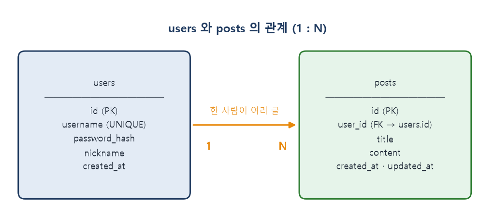
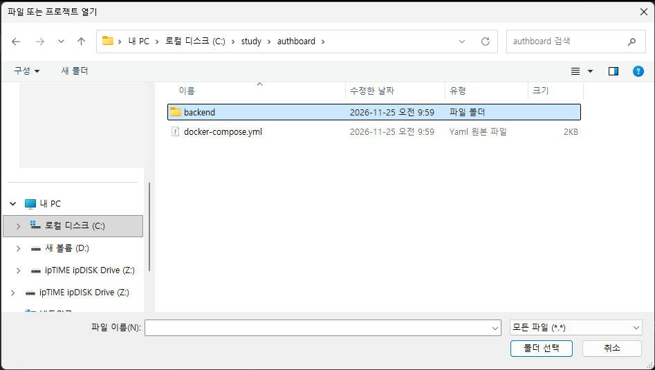
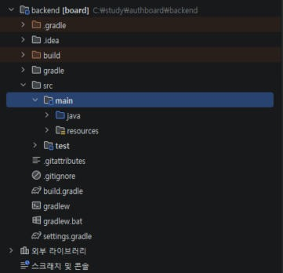
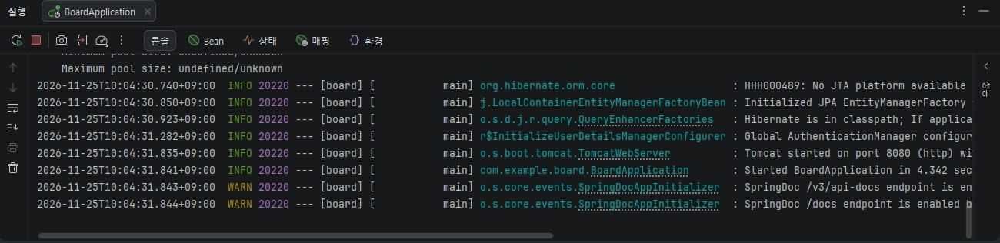

8장. 프로젝트 ② Spring Boot 회원가입·로그인 API
학습 목표
- users 테이블(User Entity)을 만들고 posts 와
@ManyToOne외래 키로 잇는다. - 회원가입(BCrypt 해시 저장)과 로그인(JWT 발급) API 를 만든다.
- Spring Security 에 JWT 필터를 끼워 "토큰 검사 → 지금 요청한 사람" 을 알아낸다.
- 주소별 접근 규칙(401)과 글쓴이 본인 검사(403)를 구분해 넣는다.
/docs의 Authorize 로 토큰을 넣어 API 를 시험한다.
8-1. 무엇이 바뀌나
데이터베이스 - 사용자 표가 생기고, 글은 작성자 이름(글자) 대신 작성자 번호(user_id) 를 가진다.

| 기초 과정 | 심화 과정 | |
|---|---|---|
| 작성자 | 글쓰기 폼에서 아무 이름이나 입력 (writer) |
로그인한 사람 (토큰에서 알아냄) |
| 글쓰기 | 누구나 | 로그인한 사람만 (아니면 401) |
| 수정·삭제 | 누구나 | 글쓴이 본인만 (아니면 403) |
| DB | board (포트 5433) |
authboard (포트 5434) |
| 새 라이브러리 | - | spring-boot-starter-security, jjwt |
API - 인증 API 3개가 늘고, 글 API 에 로그인 확인이 붙는다. JSON 모양은 기초 과정과 같게 맞췄기 때문에 9장 React 코드가 거의 그대로 쓰인다.
| 주소 | 방식 | 로그인 | 하는 일 | 성공 |
|---|---|---|---|---|
/api/auth/signup |
POST | - | 회원가입 | 201 |
/api/auth/login |
POST | - | 로그인 → 토큰 | 200 |
/api/auth/me |
GET | 필요 | 토큰 주인 정보 | 200 |
/api/posts |
GET | - | 목록 (?user_id=3 이면 그 사람 글만) |
200 |
/api/posts/{id} |
GET | - | 글 하나 | 200 |
/api/posts |
POST | 필요 | 글쓰기 | 201 |
/api/posts/{id} |
PUT | 본인 | 수정 | 200 |
/api/posts/{id} |
DELETE | 본인 | 삭제 | 204 |
새 패키지 구조
src/main/java/com/example/board
├─ BoardApplication.java
├─ user User(Entity), UserRepository
├─ auth AuthController, AuthService, SignupRequest, LoginRequest, UserResponse, TokenResponse
├─ post Post(작성자 = User), PostRepository, PostRequest, PostResponse, PostService, PostController
├─ security SecurityConfig, JwtAuthenticationFilter, JwtProvider, LoginUser
├─ common ApiException, GlobalExceptionHandler (기초와 같음)
└─ config OpenApiConfig (/docs 의 Authorize 버튼)
8-2. 준비 - 폴더 만들기, DB 켜기, IntelliJ 로 열기
[PS]
mkdir C:\study\authboard
cd C:\study\authboard
Copy-Item C:\study\react-spring-postgresql\advanced\board\docker-compose.yml .
Copy-Item -Recurse C:\study\react-spring-postgresql\advanced\board\backend .\backend
docker compose up -d
docker compose ps
# =====================================================================
# 심화 과정 8~9장 - 로그인 게시판 데이터베이스 (PostgreSQL 18)
#
# 시작 : docker compose up -d (이 파일이 있는 폴더에서)
# 상태 확인 : docker compose ps (STATUS 가 healthy 이면 준비 완료)
# 멈추기 : docker compose stop (데이터는 남는다)
# 완전히 지우기: docker compose down -v (컨테이너 + 데이터 볼륨 삭제, 되돌릴 수 없음)
#
# 접속 정보
# 호스트 localhost / 포트 5434 / DB authboard / 사용자 postgres / 비밀번호 postgres
# ※ 기초 과정 DB(5433, spring-board-db)와 따로 쓴다. 테이블 구조(users 추가)가 달라서
# 기초 과정 글과 섞이지 않게 하려는 것. 두 DB 를 동시에 켜 두어도 포트가 달라 괜찮다.
# =====================================================================
# 프로젝트 이름. 적지 않으면 "폴더 이름"(board)이 프로젝트 이름이 되는데,
# 기초·심화 두 과정의 폴더 이름이 모두 board 라서 서로를 같은 프로젝트로 보고
# 한쪽을 켜면 다른 쪽 컨테이너를 지워 버린다. 이름을 따로 붙여 이 문제를 막는다.
name: react-spring-auth-board
services:
db:
image: postgres:18
container_name: spring-auth-db
restart: unless-stopped
ports:
- "5434:5432" # 내 PC 5434 → 컨테이너 5432
environment:
POSTGRES_USER: postgres
POSTGRES_PASSWORD: postgres # 실습용 비밀번호
POSTGRES_DB: authboard
TZ: Asia/Seoul
command: ["postgres", "-c", "timezone=Asia/Seoul"]
volumes:
- authboard_data:/var/lib/postgresql
healthcheck:
test: ["CMD-SHELL", "pg_isready -U postgres -d authboard"]
interval: 5s
timeout: 3s
retries: 20
volumes:
authboard_data:
spring-auth-db 가 (healthy) 이면 DB 준비 끝. 기초 과정 DB(spring-board-db, 5433)와 동시에 켜 두어도 포트와 프로젝트 이름이 달라 괜찮다.
그다음 IntelliJ 로 C:\study\authboard\backend 를 연다. 순서는 기초 과정 9-3 과 같다(그림도 그곳에 더 있다).
- 기초 과정 서버가 실행 중이면 먼저 위쪽 ■ 로 끈다. 두 서버 모두 8080 포트를 쓴다.
- 기초 과정 프로젝트가 열려 있으면 ☰ → 파일(File) → 프로젝트 닫기(Close Project).
- 첫 화면 왼쪽의 열기(Open) →
C:\study\authboard안의backend를 한 번 클릭 → 폴더 선택. - 프로젝트 신뢰(Defender 칸은 해제) → 오른쪽 아래 Gradle 가져오기 막대가 끝날 때까지 기다린다. 처음에는 Spring Security·JWT 라이브러리를 받느라 기초보다 조금 더 걸린다.


두 프로젝트의 이름이 모두
board다. IntelliJ 첫 화면 목록이나 창 제목만 보면 기초인지 심화인지 헷갈린다. 프로젝트 창 맨 위의 경로(C:\study\authboard\backend)로 구분한다.
// build.gradle - 심화 과정 로그인 게시판 API 서버의 빌드 설정 (Gradle)
//
// 기초 과정 build.gradle 에 더해진 것
// - spring-boot-starter-security : 로그인 확인, 주소별 접근 규칙, BCrypt 비밀번호 해시
// - jjwt (api / impl / jackson) : JWT 토큰 만들기·검사하기
// IntelliJ 로 backend 폴더를 열면 이 파일을 읽어 라이브러리를 자동으로 받는다.
plugins {
id 'java'
id 'org.springframework.boot' version '4.1.2'
id 'io.spring.dependency-management' version '1.1.7'
}
group = 'com.example'
version = '0.0.1-SNAPSHOT'
java {
toolchain {
languageVersion = JavaLanguageVersion.of(21)
}
}
repositories {
mavenCentral()
}
dependencies {
implementation 'org.springframework.boot:spring-boot-starter-webmvc'
implementation 'org.springframework.boot:spring-boot-starter-data-jpa'
implementation 'org.springframework.boot:spring-boot-starter-validation'
implementation 'org.springframework.boot:spring-boot-starter-security' // ← 심화에서 추가: 인증·인가
implementation 'org.springdoc:springdoc-openapi-starter-webmvc-ui:3.2.0'
implementation 'io.jsonwebtoken:jjwt-api:0.13.0' // ← 심화에서 추가: JWT
runtimeOnly 'io.jsonwebtoken:jjwt-impl:0.13.0'
runtimeOnly 'io.jsonwebtoken:jjwt-jackson:0.13.0'
runtimeOnly 'org.postgresql:postgresql'
testImplementation 'org.springframework.boot:spring-boot-starter-webmvc-test'
testRuntimeOnly 'org.junit.platform:junit-platform-launcher'
}
tasks.named('test') {
useJUnitPlatform()
}
# application.yml - 로그인 게시판 API 서버 설정
# ${이름:기본값} → 환경 변수 "이름" 이 있으면 그 값, 없으면 기본값
server:
port: 8080
spring:
application:
name: board
datasource: # 심화 과정 DB (docker-compose.yml: 포트 5434, DB authboard)
url: ${DB_URL:jdbc:postgresql://localhost:5434/authboard}
username: postgres
password: postgres
jpa:
hibernate:
ddl-auto: update # Entity 를 보고 users, posts 테이블을 만든다
show-sql: true
properties:
hibernate:
format_sql: true
open-in-view: false
# JWT(로그인 토큰) 설정 - JwtProvider 가 읽어 간다
jwt:
# 토큰 서명에 쓰는 비밀 열쇠. 이 값이 새면 누구나 토큰을 위조할 수 있다.
# 실제 서비스에서는 환경 변수 JWT_SECRET 으로 넣고 코드·GitHub 에 올리지 않는다. (32글자 이상)
secret: ${JWT_SECRET:dev-only-secret-change-me-0123456789abcdef}
expiration-minutes: ${ACCESS_TOKEN_MINUTES:60} # 토큰 유효 시간(분)
springdoc:
swagger-ui:
path: /docs
jwt.secret 은 비밀이다. 이 값을 아는 사람은 누구의 토큰이든 만들 수 있다. 실제 서비스에서는 코드에 적지 않고 환경 변수(
JWT_SECRET)로 넣으며, GitHub 에 올리지 않는다.
8-3. Entity - User 와 Post 의 관계
package com.example.board.user;
import jakarta.persistence.Column;
import jakarta.persistence.Entity;
import jakarta.persistence.GeneratedValue;
import jakarta.persistence.GenerationType;
import jakarta.persistence.Id;
import jakarta.persistence.PrePersist;
import jakarta.persistence.Table;
import java.time.LocalDateTime;
import java.time.temporal.ChronoUnit;
/**
* User - 회원 Entity (users 테이블)
*
* id bigint 자동 번호
* username varchar(30) 로그인 아이디 (UNIQUE: 중복 불가)
* password_hash varchar(255) 비밀번호가 아니라 "해시" 를 저장한다 (BCrypt)
* nickname varchar(30) 화면에 보일 이름
* created_at timestamp 가입 시각
*
* 테이블 이름을 user 가 아니라 users 로 정한 이유: PostgreSQL 에서 user 는 예약어라서
* 그대로 쓰면 SQL 오류가 난다.
*/
@Entity
@Table(name = "users")
public class User {
@Id
@GeneratedValue(strategy = GenerationType.IDENTITY)
private Long id;
@Column(nullable = false, unique = true, length = 30)
private String username;
@Column(nullable = false)
private String passwordHash;
@Column(nullable = false, length = 30)
private String nickname;
@Column(nullable = false, updatable = false)
private LocalDateTime createdAt;
protected User() {
}
public User(String username, String passwordHash, String nickname) {
this.username = username;
this.passwordHash = passwordHash;
this.nickname = nickname;
}
@PrePersist
void onCreate() {
createdAt = LocalDateTime.now().truncatedTo(ChronoUnit.MICROS);
}
public Long getId() { return id; }
public String getUsername() { return username; }
public String getPasswordHash() { return passwordHash; }
public String getNickname() { return nickname; }
public LocalDateTime getCreatedAt() { return createdAt; }
}
package com.example.board.user;
import java.util.Optional;
import org.springframework.data.jpa.repository.JpaRepository;
/**
* UserRepository - users 테이블 창구
*
* findByUsername("minsu") → SELECT ... WHERE username = 'minsu' (로그인할 때)
* existsByUsername("minsu") → SELECT 1 ... WHERE username = 'minsu' (가입할 때 중복 확인)
* findById(3) → 토큰 속 사용자 번호로 찾기 (JpaRepository 기본 기능)
*
* 메서드 이름만 규칙대로 지으면 Spring Data JPA 가 SQL 을 만들어 준다.
*/
public interface UserRepository extends JpaRepository<User, Long> {
Optional<User> findByUsername(String username);
boolean existsByUsername(String username);
}
기초 과정 Post 의 String writer 가 User author 로 바뀌었다.
package com.example.board.post;
import com.example.board.user.User;
import jakarta.persistence.Column;
import jakarta.persistence.Entity;
import jakarta.persistence.FetchType;
import jakarta.persistence.GeneratedValue;
import jakarta.persistence.GenerationType;
import jakarta.persistence.Id;
import jakarta.persistence.JoinColumn;
import jakarta.persistence.ManyToOne;
import jakarta.persistence.PrePersist;
import jakarta.persistence.PreUpdate;
import jakarta.persistence.Table;
import java.time.LocalDateTime;
import java.time.temporal.ChronoUnit;
import org.hibernate.annotations.OnDelete;
import org.hibernate.annotations.OnDeleteAction;
/**
* Post - 게시글 Entity (심화: 작성자가 "이름 글자" 에서 "회원(User)" 으로 바뀌었다)
*
* 기초 과정 Post 와 달라진 점
* - String writer 대신 User author
* @ManyToOne : 글 여러 개(Many)가 회원 한 명(One)에게 속한다 → posts.user_id 외래 키(FK) 열이 생긴다
* @JoinColumn(name = "user_id") : 외래 키 열 이름
* @OnDelete(CASCADE) : 회원이 지워지면 그 사람 글도 DB 가 함께 지운다 (ON DELETE CASCADE)
* fetch = LAZY : 글을 읽을 때 회원 정보는 "필요할 때" 읽는다 (Repository 의 @EntityGraph 로 한 번에 읽게 했다)
* - 수정 메서드에 작성자가 없다. 작성자는 처음 쓴 사람으로 고정된다.
*/
@Entity
@Table(name = "posts")
public class Post {
@Id
@GeneratedValue(strategy = GenerationType.IDENTITY)
private Long id;
@ManyToOne(fetch = FetchType.LAZY, optional = false)
@JoinColumn(name = "user_id", nullable = false)
@OnDelete(action = OnDeleteAction.CASCADE)
private User author;
@Column(nullable = false, length = 100)
private String title;
@Column(nullable = false, columnDefinition = "text")
private String content;
@Column(nullable = false, updatable = false)
private LocalDateTime createdAt;
@Column(nullable = false)
private LocalDateTime updatedAt;
protected Post() {
}
public Post(User author, String title, String content) {
this.author = author;
this.title = title;
this.content = content;
}
@PrePersist
void onCreate() {
createdAt = now();
updatedAt = createdAt;
}
@PreUpdate
void onUpdate() {
updatedAt = now();
}
private static LocalDateTime now() {
return LocalDateTime.now().truncatedTo(ChronoUnit.MICROS); // PostgreSQL 저장 단위(마이크로초)에 맞춘다
}
public void update(String title, String content) {
this.title = title;
this.content = content;
}
/** 이 글을 쓴 사람이 userId 인가? (소유권 검사) */
public boolean isWrittenBy(Long userId) {
return author.getId().equals(userId);
}
public Long getId() { return id; }
public User getAuthor() { return author; }
public String getTitle() { return title; }
public String getContent() { return content; }
public LocalDateTime getCreatedAt() { return createdAt; }
public LocalDateTime getUpdatedAt() { return updatedAt; }
}
package com.example.board.post;
import java.util.List;
import java.util.Optional;
import org.springframework.data.jpa.repository.EntityGraph;
import org.springframework.data.jpa.repository.JpaRepository;
/**
* PostRepository - posts 테이블 창구 (심화)
*
* @EntityGraph(attributePaths = "author") : 글을 읽을 때 작성자(users)도 JOIN 으로 "한 번에" 읽는다.
* 이것이 없으면 글 10개 목록에서 작성자 닉네임을 꺼낼 때 SELECT 가 1 + 10 번 실행된다 (N+1 문제).
* 콘솔의 SQL 로그(show-sql)에서 left join users 가 보이는지 확인해 보자.
*
* findAllByOrderByIdDesc() 전체 글, 최근 글이 위로
* findAllByAuthorIdOrderByIdDesc(3) 3번 회원의 글만 ("내 글" 보기) → WHERE p.user_id = 3
* findWithAuthorById(5) 글 하나 + 작성자
*/
public interface PostRepository extends JpaRepository<Post, Long> {
@EntityGraph(attributePaths = "author")
List<Post> findAllByOrderByIdDesc();
@EntityGraph(attributePaths = "author")
List<Post> findAllByAuthorIdOrderByIdDesc(Long authorId);
@EntityGraph(attributePaths = "author")
Optional<Post> findWithAuthorById(Long id);
}
서버를 처음 켜면 Hibernate 가 두 테이블과 외래 키를 만든다. (IntelliJ Run 창에 실제로 찍힌 SQL 중 일부)
create table users (
id bigint generated by default as identity,
created_at timestamp(6) not null,
nickname varchar(30) not null,
password_hash varchar(255) not null,
username varchar(30) not null,
primary key (id)
)
...
alter table if exists users
add constraint UKr43af9ap4edm43mmtq01oddj6 unique (username)
alter table if exists posts
add constraint FK5lidm6cqbc7u4xhqpxm898qme
foreign key (user_id)
references users
on delete cascade
처음 켤 때
constraint "uk..." of relation "users" does not exist, skipping같은 WARN 이 한 줄 보일 수 있다. Hibernate 가 "제약 조건이 있으면 지우고 다시 만든다" 를 시도한 것이라 무시해도 된다.
8-4. JwtProvider - 토큰 만들기와 검사
package com.example.board.security;
import io.jsonwebtoken.Claims;
import io.jsonwebtoken.JwtException;
import io.jsonwebtoken.Jwts;
import io.jsonwebtoken.security.Keys;
import java.nio.charset.StandardCharsets;
import java.time.Duration;
import java.time.Instant;
import java.util.Date;
import javax.crypto.SecretKey;
import org.springframework.beans.factory.annotation.Value;
import org.springframework.stereotype.Component;
/**
* JwtProvider - JWT(로그인 토큰) 만들기와 검사하기 (jjwt 라이브러리)
*
* 이 파일이 보여 주는 것
* - 토큰 안에 "누구인지(sub)" 와 "언제까지 유효한지(exp)" 를 적고 SECRET_KEY 로 서명(HS256)한다.
* - 서버는 토큰을 따로 저장하지 않는다. 서명만 검사하면 위조 여부를 알 수 있다.
* - 토큰 내용은 누구나 읽을 수 있다(암호화가 아님). 그래서 비밀번호 같은 것은 넣지 않는다.
* - @Value("${jwt.secret}") : application.yml 의 jwt.secret 값을 넣어 준다.
*/
@Component
public class JwtProvider {
private final SecretKey key;
private final Duration expiration;
public JwtProvider(@Value("${jwt.secret}") String secret,
@Value("${jwt.expiration-minutes}") long expirationMinutes) {
// HS256 은 32바이트(256비트) 이상의 열쇠가 필요하다. 짧으면 서버가 켜질 때 오류가 난다
this.key = Keys.hmacShaKeyFor(secret.getBytes(StandardCharsets.UTF_8));
this.expiration = Duration.ofMinutes(expirationMinutes);
}
/** 사용자 번호를 담은 토큰을 만든다 */
public String createToken(Long userId) {
Instant now = Instant.now();
return Jwts.builder()
.subject(String.valueOf(userId)) // sub: 토큰 주인 (문자열로 넣는 것이 규칙)
.issuedAt(Date.from(now)) // iat: 발급 시각
.expiration(Date.from(now.plus(expiration))) // exp: 만료 시각
.signWith(key) // 서명 (열쇠 길이를 보고 HS256 을 고른다)
.compact(); // "헤더.내용.서명" 글자로
}
/**
* 토큰을 검사해 사용자 번호를 돌려준다. 위조됐거나 만료됐으면 null.
* parseSignedClaims 가 서명과 만료 시각을 함께 검사하고, 문제가 있으면 JwtException 을 던진다.
* ExpiredJwtException(만료), SignatureException(위조), MalformedJwtException(모양이 틀림) ...
*/
public Long parseUserId(String token) {
try {
Claims claims = Jwts.parser().verifyWith(key).build()
.parseSignedClaims(token)
.getPayload();
return Long.valueOf(claims.getSubject());
} catch (JwtException | IllegalArgumentException e) {
return null;
}
}
}
package com.example.board.security;
/**
* LoginUser - "지금 요청한 사람" 을 담는 작은 객체
*
* JwtAuthenticationFilter 가 토큰을 검사한 뒤 이 객체를 만들어 Spring Security 에 맡겨 둔다.
* Controller 에서는 @AuthenticationPrincipal LoginUser user 로 꺼내 쓴다.
*/
public record LoginUser(Long id, String username, String nickname) {
}
8-5. Spring Security - 필터와 주소 규칙
Spring Security 를 추가하면 모든 요청이 Controller 에 닿기 전에 필터 줄(filter chain) 을 지나간다. 우리는 그 줄에 토큰 검사 필터를 하나 끼워 넣는다.
요청 ─▶ CORS 필터 ─▶ JwtAuthenticationFilter ─▶ 주소 규칙 검사 ─▶ Controller ─▶ Service
(5173 허락) (토큰 → LoginUser) (로그인 필요한데 (404 없는 글,
없으면 401) 403 남의 글)
package com.example.board.security;
import com.example.board.user.UserRepository;
import jakarta.servlet.FilterChain;
import jakarta.servlet.ServletException;
import jakarta.servlet.http.HttpServletRequest;
import jakarta.servlet.http.HttpServletResponse;
import java.io.IOException;
import java.util.List;
import org.springframework.security.authentication.UsernamePasswordAuthenticationToken;
import org.springframework.security.core.context.SecurityContextHolder;
import org.springframework.web.filter.OncePerRequestFilter;
/**
* JwtAuthenticationFilter - 모든 요청에서 토큰을 먼저 검사하는 "필터"
*
* 요청이 Controller 에 닿기 전에 이 필터를 지나간다. 하는 일:
* 1. 헤더 "Authorization: Bearer <토큰>" 에서 토큰을 꺼낸다.
* 2. JwtProvider 로 서명·만료를 검사해 사용자 번호를 얻는다.
* 3. DB 에 그 사용자가 있으면 LoginUser 를 만들어 SecurityContext 에 넣는다 = "이 요청은 로그인한 요청"
* 4. 토큰이 없거나 틀려도 여기서 막지 않는다. 그냥 "로그인 안 한 요청" 으로 다음으로 넘긴다.
* → 글 목록처럼 누구나 볼 수 있는 주소는 그대로 통과하고,
* 로그인이 필요한 주소는 SecurityConfig 의 규칙에 걸려 401 이 된다.
* 토큰이 틀렸었다는 표시(JWT_ERROR)를 남겨 두면, 401 응답 문구를 "만료되었습니다" 로 고를 수 있다.
*
* @Component 를 붙이지 않은 이유: 붙이면 Spring Boot 가 일반 서블릿 필터로도 한 번 더 등록해서
* 필터가 두 번 실행된다. SecurityConfig 에서 직접 new 로 만들어 Security 필터 줄에만 넣는다.
*/
public class JwtAuthenticationFilter extends OncePerRequestFilter {
public static final String JWT_ERROR = "jwt_error"; // 요청에 남겨 두는 표시 이름
private final JwtProvider jwtProvider;
private final UserRepository userRepository;
public JwtAuthenticationFilter(JwtProvider jwtProvider, UserRepository userRepository) {
this.jwtProvider = jwtProvider;
this.userRepository = userRepository;
}
@Override
protected void doFilterInternal(HttpServletRequest request, HttpServletResponse response, FilterChain chain)
throws ServletException, IOException {
String header = request.getHeader("Authorization");
if (header != null && header.startsWith("Bearer ")) {
String token = header.substring(7); // "Bearer " 뒤의 글자
Long userId = jwtProvider.parseUserId(token);
var user = (userId == null) ? null : userRepository.findById(userId).orElse(null); // 탈퇴했을 수도 있다
if (user != null) {
LoginUser loginUser = new LoginUser(user.getId(), user.getUsername(), user.getNickname());
// 권한 목록은 이 과정에서 쓰지 않으므로 빈 목록 (관리자 기능을 만들면 ROLE_ADMIN 등을 넣는다)
var authentication = new UsernamePasswordAuthenticationToken(loginUser, null, List.of());
SecurityContextHolder.getContext().setAuthentication(authentication);
} else {
request.setAttribute(JWT_ERROR, true); // 토큰은 왔지만 쓸 수 없음 (만료·위조·없는 사용자)
}
}
chain.doFilter(request, response); // 다음 필터(그리고 Controller)로 넘긴다
}
}
package com.example.board.security;
import com.example.board.user.UserRepository;
import jakarta.servlet.http.HttpServletResponse;
import java.io.IOException;
import java.util.List;
import org.springframework.context.annotation.Bean;
import org.springframework.context.annotation.Configuration;
import org.springframework.http.HttpMethod;
import org.springframework.security.config.Customizer;
import org.springframework.security.config.annotation.web.builders.HttpSecurity;
import org.springframework.security.config.http.SessionCreationPolicy;
import org.springframework.security.core.userdetails.UserDetailsService;
import org.springframework.security.core.userdetails.UsernameNotFoundException;
import org.springframework.security.crypto.bcrypt.BCryptPasswordEncoder;
import org.springframework.security.crypto.password.PasswordEncoder;
import org.springframework.security.web.SecurityFilterChain;
import org.springframework.security.web.authentication.UsernamePasswordAuthenticationFilter;
import org.springframework.web.cors.CorsConfiguration;
import org.springframework.web.cors.CorsConfigurationSource;
import org.springframework.web.cors.UrlBasedCorsConfigurationSource;
/**
* SecurityConfig - Spring Security 설정: "어느 주소를 누가 쓸 수 있나"
*
* 이 파일이 보여 주는 것
* 1. 주소별 규칙 (authorizeHttpRequests)
* GET /api/posts/** 누구나
* POST /api/auth/signup, /api/auth/login 누구나
* /docs 등 API 시험 화면 누구나
* 그 밖 (글쓰기·수정·삭제, /api/auth/me) 로그인한 사람만 → 아니면 401
* 2. 세션을 만들지 않는다 (STATELESS) - 요청마다 토큰으로 확인하는 JWT 방식이므로
* 3. csrf 끄기 - 쿠키로 로그인 상태를 유지하지 않으므로(토큰을 헤더로 보냄) 필요 없다
* 4. 우리가 만든 JwtAuthenticationFilter 를 Security 필터 줄에 끼워 넣는다
* 5. 401·403 응답을 { "detail": "..." } JSON 으로 (React 가 그대로 보여 줄 수 있게)
* 6. CORS - Security 를 쓰면 CORS 도 여기서 켜 줘야 한다 (WebConfig 대신)
* 7. 비밀번호 해시 도구(PasswordEncoder)로 BCrypt 를 등록
* 8. 빈 UserDetailsService 등록 - Spring 의 "아이디·비밀번호 로그인 기능" 을 쓰지 않는다는 표시
*/
@Configuration
public class SecurityConfig {
@Bean
public SecurityFilterChain filterChain(HttpSecurity http, JwtProvider jwtProvider, UserRepository userRepository)
throws Exception {
http
.csrf(csrf -> csrf.disable())
.cors(Customizer.withDefaults()) // 아래 corsConfigurationSource() 를 쓴다
.sessionManagement(s -> s.sessionCreationPolicy(SessionCreationPolicy.STATELESS))
.formLogin(form -> form.disable()) // Spring 기본 로그인 화면 끄기
.httpBasic(basic -> basic.disable()) // 브라우저 기본 로그인 창 끄기
.authorizeHttpRequests(auth -> auth
.requestMatchers(HttpMethod.GET, "/api/posts", "/api/posts/**").permitAll()
.requestMatchers(HttpMethod.POST, "/api/auth/signup", "/api/auth/login").permitAll()
.requestMatchers("/docs", "/swagger-ui/**", "/v3/api-docs/**", "/error").permitAll()
.anyRequest().authenticated())
.exceptionHandling(e -> e
// 로그인이 필요한데 안 됨 → 401. 토큰이 틀렸었다면 "만료" 문구
.authenticationEntryPoint((request, response, ex) -> writeJson(response, 401,
request.getAttribute(JwtAuthenticationFilter.JWT_ERROR) != null
? "로그인이 만료되었습니다. 다시 로그인하세요"
: "로그인이 필요합니다"))
// 로그인은 했지만 권한 없음 → 403 (이 과정에서는 거의 쓰이지 않는다)
.accessDeniedHandler((request, response, ex) -> writeJson(response, 403, "권한이 없습니다")))
.addFilterBefore(new JwtAuthenticationFilter(jwtProvider, userRepository),
UsernamePasswordAuthenticationFilter.class);
return http.build();
}
/** BCrypt: 비밀번호 전용 해시. 일부러 느리고 매번 다른 소금(salt)을 섞는다 */
@Bean
public PasswordEncoder passwordEncoder() {
return new BCryptPasswordEncoder();
}
/**
* 이 서버는 로그인을 AuthService(직접 비밀번호 비교) + JWT 로 처리하므로 Spring 의 기본 사용자 조회는 쓰지 않는다.
* 이 Bean 이 없으면 Spring 이 임시 계정을 만들고 콘솔에 "Using generated security password: ..." 를 찍는다.
*/
@Bean
public UserDetailsService userDetailsService() {
return username -> {
throw new UsernameNotFoundException(username);
};
}
/** React 개발 서버(5173)에서 오는 요청 허락. Authorization 헤더도 허락해야 토큰을 보낼 수 있다 */
@Bean
public CorsConfigurationSource corsConfigurationSource() {
CorsConfiguration config = new CorsConfiguration();
config.setAllowedOrigins(List.of("http://localhost:5173", "http://127.0.0.1:5173"));
config.setAllowedMethods(List.of("GET", "POST", "PUT", "DELETE"));
config.setAllowedHeaders(List.of("*"));
UrlBasedCorsConfigurationSource source = new UrlBasedCorsConfigurationSource();
source.registerCorsConfiguration("/api/**", config);
return source;
}
private static void writeJson(HttpServletResponse response, int status, String detail) throws IOException {
response.setStatus(status);
response.setContentType("application/json;charset=UTF-8");
response.getWriter().write("{\"detail\":\"" + detail + "\"}");
}
}
| 규칙 | 코드 | 뜻 |
|---|---|---|
| 누구나 | .requestMatchers(HttpMethod.GET, "/api/posts", "/api/posts/**").permitAll() |
글 목록·읽기는 로그인 없이 |
| 누구나 | .requestMatchers(HttpMethod.POST, "/api/auth/signup", "/api/auth/login").permitAll() |
가입·로그인 |
| 로그인 필요 | .anyRequest().authenticated() |
위에 없는 나머지 전부 (글쓰기·수정·삭제, /me) |
기초 과정의 WebConfig(CORS) 는 어디 갔지? Spring Security 를 쓰면 CORS 를 Security 필터 줄에서 처리해야 preflight(OPTIONS) 요청이 로그인 검사에 막히지 않는다. 그래서
SecurityConfig의corsConfigurationSource()로 옮겼고, Authorization 헤더도 허락해 두었다.
8-6. 인증 API - 가입·로그인·내 정보
package com.example.board.auth;
import jakarta.validation.constraints.NotBlank;
import jakarta.validation.constraints.Pattern;
import jakarta.validation.constraints.Size;
/**
* SignupRequest - 회원가입 요청 JSON
*
* { "username": "minsu", "password": "password123", "nickname": "민수" }
*
* 규칙 (React SignupPage 의 validate 함수와 같다. 화면 검사는 친절, 서버 검사는 보안)
* username : 영문 소문자·숫자·밑줄 4~20자 (정규 표현식 ^[a-z0-9_]{4,20}$)
* password : 8~72자 (BCrypt 는 72바이트까지만 쓰기 때문에 위쪽 한계를 둔다)
* nickname : 1~30자
*/
public record SignupRequest(
@NotBlank(message = "아이디를 입력하세요")
@Pattern(regexp = "^[a-z0-9_]{4,20}$", message = "아이디는 영문 소문자·숫자·밑줄(_)로 4~20자입니다")
String username,
@NotBlank(message = "비밀번호를 입력하세요")
@Size(min = 8, max = 72, message = "비밀번호는 8~72자입니다")
String password,
@NotBlank(message = "닉네임을 입력하세요")
@Size(max = 30, message = "닉네임은 30자까지 쓸 수 있습니다")
String nickname
) {
}
package com.example.board.auth;
import jakarta.validation.constraints.NotBlank;
/**
* LoginRequest - 로그인 요청 JSON { "username": "minsu", "password": "password123" }
* 로그인할 때는 형식 규칙을 검사하지 않는다. 틀리면 그냥 "아이디 또는 비밀번호가 올바르지 않습니다".
*/
public record LoginRequest(
@NotBlank(message = "아이디를 입력하세요") String username,
@NotBlank(message = "비밀번호를 입력하세요") String password
) {
}
package com.example.board.auth;
import com.example.board.user.User;
/**
* UserResponse - 회원 정보 응답 JSON { "id": 3, "username": "minsu", "nickname": "민수" }
* 비밀번호 해시는 절대 응답에 넣지 않는다. 그래서 Entity(User)를 그대로 돌려주지 않고 이 DTO 를 쓴다.
*/
public record UserResponse(Long id, String username, String nickname) {
public static UserResponse from(User user) {
return new UserResponse(user.getId(), user.getUsername(), user.getNickname());
}
}
package com.example.board.auth;
import com.fasterxml.jackson.annotation.JsonProperty;
/**
* TokenResponse - 로그인 성공 응답 JSON
*
* { "access_token": "eyJhbGciOi...", "token_type": "bearer",
* "user": { "id": 3, "username": "minsu", "nickname": "민수" } }
*
* user 를 함께 돌려주는 이유: 로그인하자마자 화면 머리글에 닉네임을 보여 주려고.
*/
public record TokenResponse(
@JsonProperty("access_token") String accessToken,
@JsonProperty("token_type") String tokenType,
UserResponse user
) {
public static TokenResponse bearer(String token, UserResponse user) {
return new TokenResponse(token, "bearer", user);
}
}
package com.example.board.auth;
import com.example.board.common.ApiException;
import com.example.board.security.JwtProvider;
import com.example.board.user.User;
import com.example.board.user.UserRepository;
import org.springframework.http.HttpStatus;
import org.springframework.security.crypto.password.PasswordEncoder;
import org.springframework.stereotype.Service;
import org.springframework.transaction.annotation.Transactional;
/**
* AuthService - 회원가입·로그인 규칙
*
* 가입 : 아이디 중복이면 409 → 비밀번호를 BCrypt 해시로 바꿔 저장 (원래 비밀번호는 어디에도 저장하지 않는다)
* 로그인 : 아이디로 회원 찾기 → 입력한 비밀번호와 저장된 해시 비교 → 맞으면 JWT 발급
*
* PasswordEncoder 는 SecurityConfig 에서 BCryptPasswordEncoder 로 등록했다.
* encode("password123") → "$2a$10$Q5..." (매번 다른 값. 소금(salt)을 섞기 때문)
* matches("password123", 해시) → true / false
*/
@Service
@Transactional(readOnly = true)
public class AuthService {
private final UserRepository userRepository;
private final PasswordEncoder passwordEncoder;
private final JwtProvider jwtProvider;
public AuthService(UserRepository userRepository, PasswordEncoder passwordEncoder, JwtProvider jwtProvider) {
this.userRepository = userRepository;
this.passwordEncoder = passwordEncoder;
this.jwtProvider = jwtProvider;
}
@Transactional
public UserResponse signup(SignupRequest request) {
if (userRepository.existsByUsername(request.username())) {
throw new ApiException(HttpStatus.CONFLICT, "이미 사용 중인 아이디입니다"); // 409
}
String hash = passwordEncoder.encode(request.password()); // 비밀번호 → 해시
User user = userRepository.save(new User(request.username(), hash, request.nickname().strip()));
return UserResponse.from(user);
}
public TokenResponse login(LoginRequest request) {
User user = userRepository.findByUsername(request.username())
// 아이디가 없을 때와 비밀번호가 틀릴 때 같은 메시지를 준다
// → "이 아이디는 가입되어 있다" 는 정보를 공격자에게 주지 않기 위해
.filter(u -> passwordEncoder.matches(request.password(), u.getPasswordHash()))
.orElseThrow(() -> new ApiException(HttpStatus.UNAUTHORIZED, "아이디 또는 비밀번호가 올바르지 않습니다"));
String token = jwtProvider.createToken(user.getId());
return TokenResponse.bearer(token, UserResponse.from(user));
}
public UserResponse me(Long userId) {
return userRepository.findById(userId)
.map(UserResponse::from)
.orElseThrow(() -> new ApiException(HttpStatus.UNAUTHORIZED, "로그인이 만료되었습니다. 다시 로그인하세요"));
}
}
package com.example.board.auth;
import com.example.board.security.LoginUser;
import io.swagger.v3.oas.annotations.security.SecurityRequirement;
import jakarta.validation.Valid;
import org.springframework.http.HttpStatus;
import org.springframework.security.core.annotation.AuthenticationPrincipal;
import org.springframework.web.bind.annotation.GetMapping;
import org.springframework.web.bind.annotation.PostMapping;
import org.springframework.web.bind.annotation.RequestBody;
import org.springframework.web.bind.annotation.RequestMapping;
import org.springframework.web.bind.annotation.ResponseStatus;
import org.springframework.web.bind.annotation.RestController;
/**
* AuthController - 회원가입·로그인·내 정보 API
*
* 주소 방식 로그인 하는 일 성공
* /api/auth/signup POST - 회원가입 201
* /api/auth/login POST - 로그인 → 토큰 발급 200
* /api/auth/me GET 필요 토큰 주인의 정보 200
*
* 상태 코드 정리
* 400 Bad Request : 입력 규칙 위반 (아이디 형식, 비밀번호 길이)
* 401 Unauthorized : 로그인 실패, 토큰 없음·만료·위조 → "누구세요?"
* 403 Forbidden : 로그인은 했지만 남의 글 → "당신은 알지만 안 됩니다"
* 409 Conflict : 이미 있는 아이디로 가입
*/
@RestController
@RequestMapping("/api/auth")
public class AuthController {
private final AuthService authService;
public AuthController(AuthService authService) {
this.authService = authService;
}
@PostMapping("/signup")
@ResponseStatus(HttpStatus.CREATED)
public UserResponse signup(@Valid @RequestBody SignupRequest request) {
return authService.signup(request);
}
@PostMapping("/login")
public TokenResponse login(@Valid @RequestBody LoginRequest request) {
return authService.login(request);
}
@GetMapping("/me")
@SecurityRequirement(name = "bearerAuth")
public UserResponse me(@AuthenticationPrincipal LoginUser user) {
return authService.me(user.id());
}
}
로그인 실패 메시지를 하나로 아이디가 없을 때와 비밀번호가 틀릴 때 같은 문구("아이디 또는 비밀번호가 올바르지 않습니다")를 돌려준다. 다르게 알려 주면 공격자가 "이 아이디는 가입되어 있구나" 를 알아낼 수 있다.
8-7. 게시글 API - 작성자와 소유권 검사
package com.example.board.post;
import jakarta.validation.constraints.NotBlank;
import jakarta.validation.constraints.Size;
/**
* PostRequest - 글쓰기·수정 요청 JSON (심화)
*
* { "title": "제목", "content": "내용" }
*
* 기초 과정과 달리 writer(작성자)가 없다. 작성자는 서버가 로그인 토큰을 보고 정한다.
* → 남의 이름으로 글을 쓸 수 없다. 본문에 "user_id": 99 를 넣어 보내도 이 record 에 칸이 없어서 무시된다.
*/
public record PostRequest(
@NotBlank(message = "제목을 입력하세요")
@Size(max = 100, message = "제목은 100자까지 쓸 수 있습니다")
String title,
String content
) {
}
package com.example.board.post;
import com.fasterxml.jackson.annotation.JsonProperty;
import java.time.LocalDateTime;
/**
* PostResponse - 글 하나의 응답 JSON (심화)
*
* { "id": 1, "user_id": 3, "writer": "민수", "title": "...", "content": "...",
* "created_at": "...", "updated_at": "..." }
*
* - user_id : 글쓴이 번호. React 가 "내 글인가?" (user.id === post.user_id) 를 판단할 때 쓴다.
* - writer : 글쓴이 닉네임. 기초 과정과 같은 이름이라 React 화면 코드를 거의 고치지 않아도 된다.
*/
public record PostResponse(
Long id,
@JsonProperty("user_id") Long userId,
String writer,
String title,
String content,
@JsonProperty("created_at") LocalDateTime createdAt,
@JsonProperty("updated_at") LocalDateTime updatedAt
) {
public static PostResponse from(Post post) {
return new PostResponse(post.getId(), post.getAuthor().getId(), post.getAuthor().getNickname(),
post.getTitle(), post.getContent(), post.getCreatedAt(), post.getUpdatedAt());
}
}
package com.example.board.post;
import com.example.board.common.ApiException;
import com.example.board.security.LoginUser;
import com.example.board.user.User;
import com.example.board.user.UserRepository;
import java.util.List;
import org.springframework.http.HttpStatus;
import org.springframework.stereotype.Service;
import org.springframework.transaction.annotation.Transactional;
/**
* PostService - 게시글 업무 규칙 (심화: 작성자 = 로그인한 사람, 수정·삭제는 본인만)
*
* 수정·삭제 검사 순서
* 1. 글이 있는가? 없으면 404 "글을 찾을 수 없습니다"
* 2. 내 글인가? 아니면 403 "본인이 쓴 글만 수정·삭제할 수 있습니다"
* (로그인 여부 401 은 이 메서드에 오기 전에 Spring Security 가 먼저 검사한다)
*/
@Service
@Transactional(readOnly = true)
public class PostService {
private final PostRepository postRepository;
private final UserRepository userRepository;
public PostService(PostRepository postRepository, UserRepository userRepository) {
this.postRepository = postRepository;
this.userRepository = userRepository;
}
/** 글 목록. userId 가 있으면 그 사람 글만 */
public List<PostResponse> findAll(Long userId) {
List<Post> posts = (userId == null)
? postRepository.findAllByOrderByIdDesc()
: postRepository.findAllByAuthorIdOrderByIdDesc(userId);
return posts.stream().map(PostResponse::from).toList();
}
public PostResponse findOne(Long id) {
return PostResponse.from(getPost(id));
}
@Transactional
public PostResponse create(PostRequest request, LoginUser loginUser) {
// 토큰 주인(loginUser)을 작성자로. getReferenceById 는 SELECT 없이 "번호만 아는 User" 를 만든다
User author = userRepository.getReferenceById(loginUser.id());
Post post = postRepository.save(new Post(author, request.title().strip(), clean(request.content())));
return findOne(post.getId()); // 닉네임까지 붙은 모양으로 다시 읽어 돌려준다
}
@Transactional
public PostResponse update(Long id, PostRequest request, LoginUser loginUser) {
Post post = getPost(id); // 1. 있는가? (404)
checkOwner(post, loginUser); // 2. 내 글인가? (403)
post.update(request.title().strip(), clean(request.content()));
postRepository.flush(); // UPDATE 를 지금 실행 → updatedAt 이 채워진 값으로 응답
return PostResponse.from(post);
}
@Transactional
public void delete(Long id, LoginUser loginUser) {
Post post = getPost(id);
checkOwner(post, loginUser);
postRepository.delete(post);
}
private Post getPost(Long id) {
return postRepository.findWithAuthorById(id)
.orElseThrow(() -> new ApiException(HttpStatus.NOT_FOUND, "글을 찾을 수 없습니다"));
}
private void checkOwner(Post post, LoginUser loginUser) {
if (!post.isWrittenBy(loginUser.id())) {
throw new ApiException(HttpStatus.FORBIDDEN, "본인이 쓴 글만 수정·삭제할 수 있습니다");
}
}
private String clean(String content) {
return content == null ? "" : content.strip();
}
}
package com.example.board.post;
import com.example.board.security.LoginUser;
import io.swagger.v3.oas.annotations.security.SecurityRequirement;
import jakarta.validation.Valid;
import java.util.List;
import org.springframework.http.HttpStatus;
import org.springframework.security.core.annotation.AuthenticationPrincipal;
import org.springframework.web.bind.annotation.DeleteMapping;
import org.springframework.web.bind.annotation.GetMapping;
import org.springframework.web.bind.annotation.PathVariable;
import org.springframework.web.bind.annotation.PostMapping;
import org.springframework.web.bind.annotation.PutMapping;
import org.springframework.web.bind.annotation.RequestBody;
import org.springframework.web.bind.annotation.RequestMapping;
import org.springframework.web.bind.annotation.RequestParam;
import org.springframework.web.bind.annotation.ResponseStatus;
import org.springframework.web.bind.annotation.RestController;
/**
* PostController - 게시글 API (심화)
*
* 주소 방식 로그인 하는 일
* /api/posts GET - 글 목록 (?user_id=3 이면 그 사람 글만)
* /api/posts/{id} GET - 글 하나
* /api/posts POST 필요 새 글 (작성자 = 토큰 주인)
* /api/posts/{id} PUT 본인 글 수정
* /api/posts/{id} DELETE 본인 글 삭제 (204)
*
* "로그인 필요" 는 SecurityConfig 의 주소 규칙이 정하고,
* "본인" 검사는 PostService 가 한다.
*
* @AuthenticationPrincipal LoginUser user
* → JwtAuthenticationFilter 가 토큰을 검사해 넣어 둔 "지금 요청한 사람" 을 받는다.
* @SecurityRequirement(name = "bearerAuth")
* → /docs 화면에서 자물쇠 표시를 붙이고 Authorize 로 넣은 토큰을 보내게 한다 (OpenApiConfig).
*/
@RestController
@RequestMapping("/api/posts")
public class PostController {
private final PostService postService;
public PostController(PostService postService) {
this.postService = postService;
}
@GetMapping
public List<PostResponse> list(@RequestParam(name = "user_id", required = false) Long userId) {
return postService.findAll(userId); // ?user_id=3 (없어도 된다)
}
@GetMapping("/{id}")
public PostResponse get(@PathVariable Long id) {
return postService.findOne(id);
}
@PostMapping
@ResponseStatus(HttpStatus.CREATED)
@SecurityRequirement(name = "bearerAuth")
public PostResponse create(@Valid @RequestBody PostRequest request, @AuthenticationPrincipal LoginUser user) {
return postService.create(request, user);
}
@PutMapping("/{id}")
@SecurityRequirement(name = "bearerAuth")
public PostResponse update(@PathVariable Long id, @Valid @RequestBody PostRequest request,
@AuthenticationPrincipal LoginUser user) {
return postService.update(id, request, user);
}
@DeleteMapping("/{id}")
@ResponseStatus(HttpStatus.NO_CONTENT)
@SecurityRequirement(name = "bearerAuth")
public void delete(@PathVariable Long id, @AuthenticationPrincipal LoginUser user) {
postService.delete(id, user);
}
}
403 과 404 의 순서 PostService.update 는 ① 글이 있는지(404) → ② 내 글인지(403) 순서로 검사한다. Repository 에 findByIdAndAuthorId 같은 메서드를 만들어 한 번에 찾는 방법도 있지만, 그러면 "없는 글" 과 "남의 글" 을 구분할 수 없어 화면에 정확한 이유를 보여 주기 어렵다.
/docs 화면의 Authorize 버튼을 만드는 설정은 다음과 같다.
package com.example.board.config;
import io.swagger.v3.oas.annotations.OpenAPIDefinition;
import io.swagger.v3.oas.annotations.enums.SecuritySchemeType;
import io.swagger.v3.oas.annotations.info.Info;
import io.swagger.v3.oas.annotations.security.SecurityScheme;
import org.springframework.context.annotation.Configuration;
/**
* OpenApiConfig - /docs (Swagger UI) 화면 설정
*
* "bearerAuth" 라는 이름의 인증 방식(Authorization: Bearer 토큰)을 등록한다.
* → /docs 오른쪽 위에 Authorize 버튼이 생기고, 넣은 토큰이
* @SecurityRequirement(name = "bearerAuth") 가 붙은 API 요청에 자동으로 붙는다.
*/
@Configuration
@OpenAPIDefinition(info = @Info(title = "React 게시판 API (심화: 로그인)", version = "1.0"))
@SecurityScheme(name = "bearerAuth", type = SecuritySchemeType.HTTP, scheme = "bearer", bearerFormat = "JWT")
public class OpenApiConfig {
}
8-8. 서버 실행과 /docs 로 시험하기
IntelliJ 에서 BoardApplication 을 ▶ 실행한다(기초 9-6 과 같은 방법). 실행 창에 Started BoardApplication 이 보이면 켜진 것이다.

그다음 http://localhost:8080/docs 를 연다. 자물쇠 🔒 가 붙은 API 가 로그인이 필요한 API 다.

순서대로 시험하기
- POST /api/auth/signup → Try it out → 아래 본문으로 Execute → 201
{ "username": "minsu", "password": "password123", "nickname": "민수" }
- 같은 본문으로 한 번 더 → 409
"이미 사용 중인 아이디입니다" - POST /api/auth/login →
{"username": "minsu", "password": "password123"}→ 200. 응답의access_token값(따옴표 안)을 복사한다.
{
"access_token": "eyJhbGciOiJIUzI1NiJ9.eyJzdWIiOiIxIiwiaWF0Ijox...",
"token_type": "bearer",
"user": { "id": 1, "username": "minsu", "nickname": "민수" }
}
- POST /api/posts 를 토큰 없이 Execute → 401
"로그인이 필요합니다" - 위쪽 Authorize 버튼 → Value 칸에 복사한 토큰을 붙여 넣고(앞에 Bearer 는 쓰지 않는다) → Authorize → Close
- 다시 POST /api/posts →
{"title": "민수의 첫 글", "content": "hi"}→ 201.writer가"민수"로 들어가 있다. - 회원을 하나 더 만들고(
jisu) 그 토큰으로 Authorize 를 바꾼 뒤, 민수의 글을 PUT 또는 DELETE → 403"본인이 쓴 글만 수정·삭제할 수 있습니다"
교안을 만들 때 같은 시험을 자동으로 돌린 실제 결과다.
signup 201 {'id': 1, 'username': 'minsu', 'nickname': '민수'}
dup 409 {'detail': '이미 사용 중인 아이디입니다'}
wrongpw 401 {'detail': '아이디 또는 비밀번호가 올바르지 않습니다'}
login 200 {'id': 1, 'username': 'minsu', 'nickname': '민수'} bearer eyJhbGciOiJIUzI1NiJ9
me 200 {'id': 1, 'username': 'minsu', 'nickname': '민수'}
noauth post 401 {'detail': '로그인이 필요합니다'}
bad token 401 {'detail': '로그인이 만료되었습니다. 다시 로그인하세요'}
bad token list 200 []
create 201 {'id': 1, 'user_id': 1, 'writer': '민수', 'title': '민수의 글', ...}
other put 403 {'detail': '본인이 쓴 글만 수정·삭제할 수 있습니다'}
own put 200 {'id': 1, 'user_id': 1, 'writer': '민수', 'title': '수정', ...}
other del 403 {'detail': '본인이 쓴 글만 수정·삭제할 수 있습니다'}
own del 204
404 404 {'detail': '글을 찾을 수 없습니다'}
expired 401 {'detail': '로그인이 만료되었습니다. 다시 로그인하세요'}
bad token list 200 [] 줄을 보자. 잘못된 토큰을 붙여 글 목록을 요청하면 401 이 아니라 그냥 목록이 온다(그때는 글이 없어 빈 배열). 필터는 토큰이 틀려도 막지 않고 "로그인 안 한 요청" 으로 넘기고, 글 목록은 누구나 볼 수 있는 주소이기 때문이다.
DB 에서 확인하기 - 비밀번호가 아니라 BCrypt 해시가 저장되어 있다.
[PS]
docker exec spring-auth-db psql -U postgres -d authboard -c "SELECT id, username, left(password_hash, 40) AS password_hash, nickname FROM users;"
id | username | password_hash | nickname
----+----------+------------------------------------------+----------
1 | jisu | $2a$10$Xluv52IJL.diEEaAkf8xhufkH/IZOX1rX | 지수
2 | minsu | $2a$10$kqtm67fPeysChKS8.PVizO80IkYNGGknD | 민수
(2 rows)
정리
- users(아이디 UNIQUE, 비밀번호 해시, 닉네임) 1 : N posts(
@ManyToOne→ user_id FK, ON DELETE CASCADE). - 가입: BCrypt 로 해시해서 저장, 중복이면 409. 로그인:
matches로 비교 → JWT 발급. JwtAuthenticationFilter가 토큰을LoginUser로 바꾸고, Controller 는@AuthenticationPrincipal로 받는다.- 401 은
SecurityConfig의 주소 규칙이, 404·403 은PostService가 정한다. - 작성자는 입력받지 않고 토큰에서 정한다 → 남의 이름으로 쓸 수 없다.
확인 문제
- 다음 요청이 각각 어디(SecurityConfig / PostService / GlobalExceptionHandler)에서 막히고 몇 번 상태 코드가 되는지 쓰시오. (가) 토큰 없이 글쓰기 (나) 지수가 민수의 글 삭제 (다) 제목이 빈 글쓰기 (라) 없는 글 수정
- 글쓰기 요청 본문에
"user_id": 99를 넣어 보내면 99번 사용자의 글로 저장되는가? 코드를 근거로 답하시오. - 비밀번호를 8자 미만으로 가입 요청하면 어떤 응답이 오는가? 그 검사는 어느 코드가 하는가?
/api/auth/me에 회원의 가입 시각(created_at)도 함께 돌려주려면 어느 파일을 어떻게 고쳐야 하는가?jwt.secret을 바꾸고 서버를 다시 켜면, 이미 로그인해 있던 사용자들은 어떻게 되는가?PostRepository의@EntityGraph(attributePaths = "author")를 지우고 글이 10개인 목록을 요청하면 IntelliJ Run 창의 SQL 은 어떻게 달라지는가?